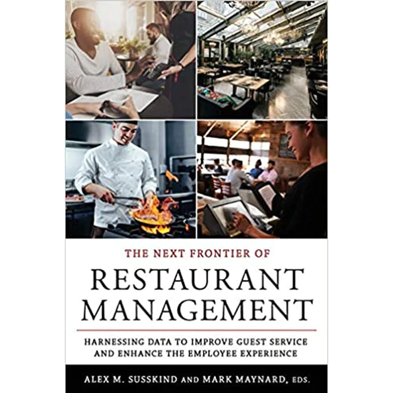
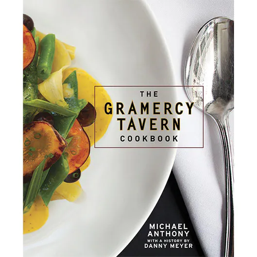
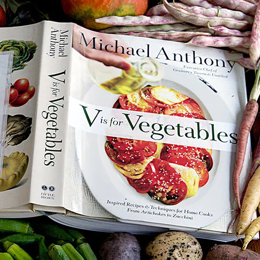
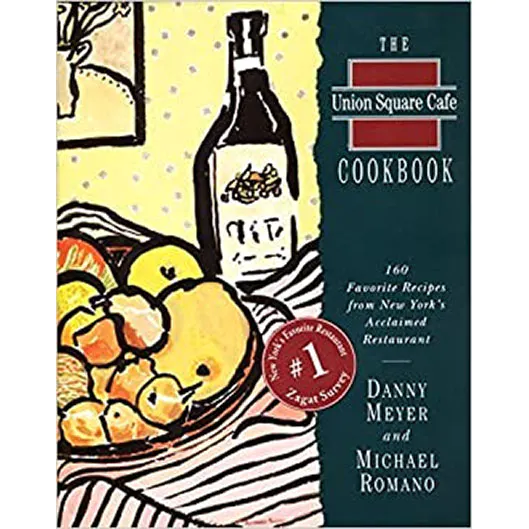
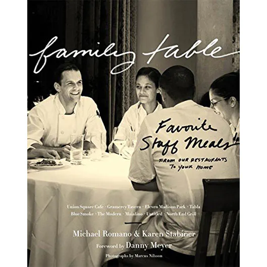
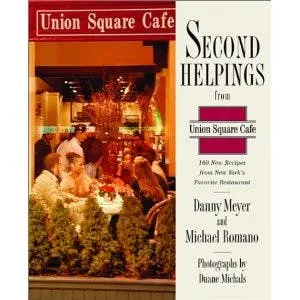
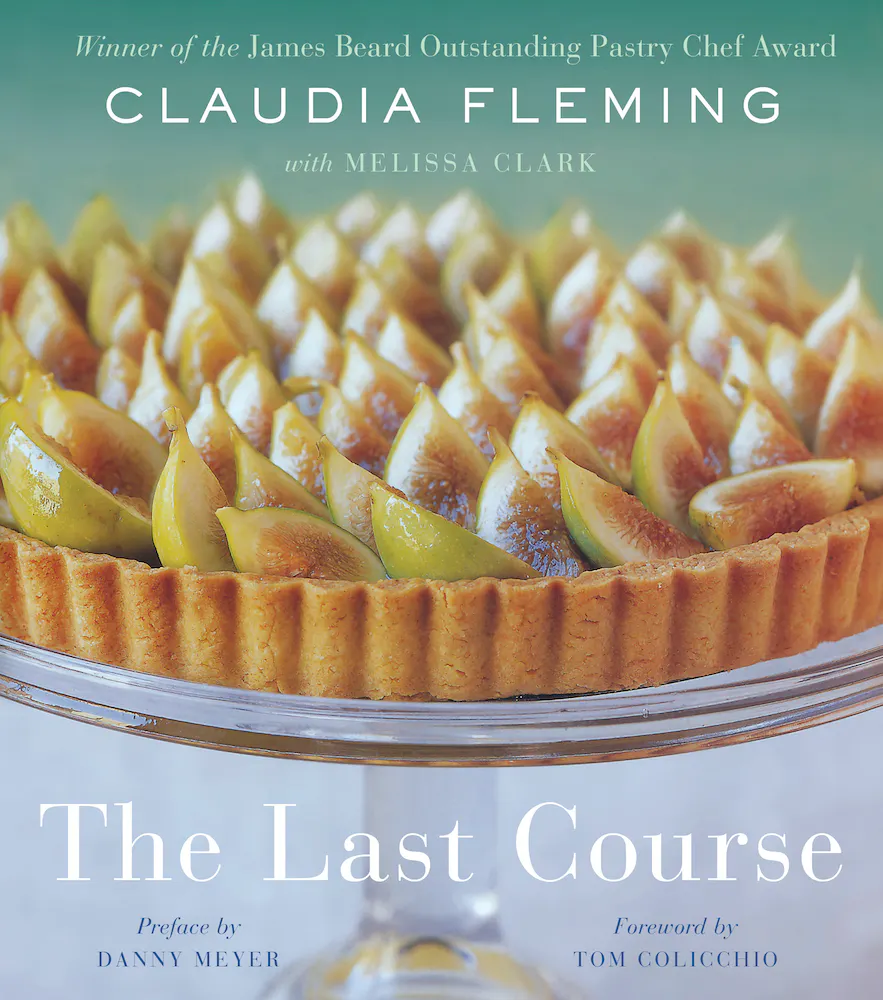

-
Setting the Table
The Transforming Power of Hospitality in Business
By Danny Meyer
In this landmark book, Danny Meyer shares the lessons he's learned in his years in the restaurant business. From the opening night at Union Square Cafe to the evolution of Shake Shack, and everything in between, Danny writes with humility and good humor about the wonderful successes and humbling mistakes he's seen along the way.
-

The Next Frontier of Restaurant Management
Harnessing Data to Improve Guest Service and Enhance the Employee Experience
The Next Frontier of Restaurant Management brings together the latest research in hospitality studies to offer students, hospitality executives, and restaurant managers the best practices for restaurant success. Alex M. Susskind and Mark Maynard draw on their experiences as a hospitality educator and a restaurant industry leader, respectively, to guide readers through innovative articles that address specific aspects of restaurant management
-

The Gramercy Tavern Cookbook
Restaurateur Danny Meyer's intimate story of how Gramercy was born sets the stage for 125 recipes from Chef Michael Anthony that highlight the bounty of the farmer's market.
By Michael Anthony with a history by Danny Meyer
Opened in 1994, Gramercy Tavern is more than just a restaurant. It has become a New York institution earning dozens of accolades, including six James Beard awards. It's impeccable, fiercely seasonal cooking, welcoming, and convivial atmosphere, and steadfast commitment to hospitality are unparalleled. The restaurant's sense of community and generosity is captured in these pages for everyone to bring home and savor.
-

V is for Vegetables
More than 150 Simple Recipes from One of America's Most Acclaimed Chefs
Winner of the 2015 James Beard Award for Best Vegetable-Focused CookbookBy Michael Anthony
Michael Anthony shows home cooks how to speak the language of vegetables in his first standalone book, V IS FOR VEGETABLES: Inspired Recipes & Techniques for Home Cooks—from Artichokes to Zucchini (Little, Brown and Company), written with award-winning coauthor Dorothy Kalins.
-

Union Square Cafe Cookbook
160 Recipes from New York's Acclaimed Restaurant
Winner of the IACP Julia Child Award for the best new cookbook by a first-time authorBy Danny Meyer and Michael Romano
Union Square Cafe serves some of the most imaginative, interesting, and tasty food in America. The restaurant and its owners, Danny Meyer and chef Michael Romano, have been lauded for their outstanding food and superb service by Gourmet, Food & Wine, the New York Times, and the James Beard Foundation. Now its devoted fans from down the block and across the globe can savor the restaurant's marvelous dishes, trademark hospitality, and warm decor at home.
-
Mix Shake Stir
Cocktails for The Home Bar
The bartenders at Danny Meyer's wildly popular restaurants are known for their creative concoctions. Guests at Union Square Cafe or Gramercy Tavern expect not only the finest cuisine but also Meyer's special brand of hospitality that often begins with a Venetian Spritz or a Cranberry Daiquiri. In MIX SHAKE STIR, USHG's mixologists offer all the tips and tools needed to become a masterful mixologist and supplements the cocktail recipes with gourmet takes on bar snacks. There are over 100 recipes of bar classics, signature favorites, and original, refreshing libations—from the Modern's elegant mojito made with champagne and rose water to Tabla's Pomegranate Gimlet. Shaken or stirred, straight up or on the rocks, these cocktails make this collection an invaluable resource for elegant entertaining.
-

Family Table
Favorite Staff Meals from Our Restaurants to Your Home
By Michael Romano and Karen Stabiner
The best staff meals from Danny Meyer's acclaimed restaurants — Union Square Cafe, Gramercy Tavern, Maialino, Eleven Madison Park, The Modern, Blue Smoke, Untitled at The Whitney, and more — simple enough for any home cook's weeknight dinners, delicious enough for the most discriminating palates.
-

Second Helpings
More Favorite Recipes from Union Square Cafe
By Danny Meyer and Michael Romano
Ask New Yorkers to name their favorite restaurant and they are likely to reply: “Union Square Cafe.” Indeed, Union Square Cafe has been perennially ranked on the city's Most Popular restaurant list by the Zagat Survey and has earned many of the food world's top honors, including a James Beard Award for Outstanding Restaurant of the Year, two three-star rankings from the New York Times, annual Awards of Excellence from Wine Spectator magazine, and the James Beard Foundation's Best Chef in New York Award for Michael Romano. What makes USC stand out in a sea of other great New York City restaurants? A simple but rare combination of extraordinary food, excellent wine, and the sort of warm, genuine hospitality one typically finds only in a neighborhood spot. In this new cookbook, proprietor Danny Meyer and executive chef and co-owner Michael Romano share more of the delicious dishes that have kept their customers coming back for more, year after year.
-
Delectable
Sweet and Savory Baking
By Claudia Fleming with Catherine Young
In this highly anticipated cookbook, her first in twenty years, Claudia Fleming invites you into her home kitchen with 140+ sweet and savory recipes she perfected for friends and family.
In Claudia's first cookbook The Last Course, a culinary classic, she shared recipes from the menus at Gramercy Tavern that introduced home cooks to her sophisticated, classically inspired seasonal desserts and pastries and established a standard in pastry kitchens across the country. Now Claudia is offering a new collection of recipes all developed and tweaked in her own small kitchen. Baking at home, Claudia brings her characteristic style and skilled approach to every sweet and treat, along with an ease with culinary history, and a growing connection to her own family traditions. A mix of classic favorites and new explorations, including her first foray into savory recipes for savory baking, each delicious dish is the work of a master in her prime.
-

The Last Course
Preface by Danny Meyer; Foreword by Tom Colicchio
By Claudia Fleming with Melissa Clark
A beautiful new edition of “the greatest dessert book in the history of the world” (Bon Appétit), featuring 175 timeless recipes from Gramercy Tavern's James Beard Award-winning pastry chef.
Claudia Fleming is a renowned name in the pastry world, acclaimed for having set an industrywide standard at New York City's Gramercy Tavern with her James Beard Award-winning desserts. With The Last Course, dessert lovers everywhere will be able to re-create and savor her impressive repertoire at home. Using fresh, seasonal ingredients at the peak of their flavor, Claudia creates straightforward yet enchanting desserts that are somehow equal to much more than the sum of their parts. Beautifully illustrated with more than eighty color photographs throughout, The Last Course is a timeless, one-of-a-kind collection filled with original recipes that will inspire dessert enthusiasts for years to come.